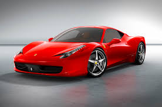

LEXUS 570

read more
LEXUS 570 |
||
|
read more |
The Lexus LX is a full-size luxury sport utility vehicle (SUV) sold by Lexus since January 1996 having entered manufacture in November 1995. Three generations have been produced, all based heavily on the long-running Toyota Land Cruiser SUVs. The first generation LX 450 started production in 1995 as Lexus' first entry into the SUV market. Its successor, the LX 470, premiered in 1998 and was produced until 2006. The latest, third-generation, LX 570 debuted at the New York International Auto Show in April 2007 as a complete redesign for the 2008 model year. The LX is not available in Japan where it is manufactured.[citation needed] The LX name stands for "Luxury Crossover". However, some Lexus importers use the backronymic name, "Luxury Four Wheel Drive". | |
Ferrari 458 |
||
| 
read more |
The Ferrari 458 Italia is a mid-engined sports car produced by the Italian sports car manufacturer Ferrari. The 458 replaced the Ferrari F430, and was first officially unveiled at the 2009 Frankfurt Motor Show. It is replaced by the Ferrari 488, which was unveiled at the Geneva Motor Show 2015. | |